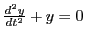
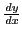

Next: Curvature; radius of curvature Up: Change of variable Previous: Simultaneous change of both Contents Index
Change the independent variable from  to
to  in the following
equations.
in the following
equations.
![$ R
= \frac{ \left[ 1 + \left( \frac{dy}{dx} \right)^2 \right]^{\frac{3}{2}} }{
\frac{d^2 y}{dx^2} }$](img3049.png)
Ans. .
Ans. .
Ans. .
Ans. .
Change the dependent variable from  to
to  in the following equations:
in the following equations:
Ans. .
Ans.
 .
.
Ans. .
Change the independent variable in the following eight equations:
Ans. .
Ans. .
Ans. .
Ans. .
Ans. .
Ans. .
Ans. .
Ans. .
In the following seven examples the equations are given in parametric form.
Find
 and
 in each case:
in each case:
Ans. , .
We shall solve this using SAGE.
[fontsize=\scriptsize,fontfamily=courier,fontshape=tt,frame=single,label=\sage]
sage: t = var("t")
sage: x = 7 + t^2
sage: y = 3 + t^2 - 3*t^4
sage: f = (x, y)
sage: p = parametric_plot(f, 0, 1)
sage: D_x_of_y = diff(y,t)/diff(x,t); D_x_of_y
(2*t - 12*t^3)/(2*t)
sage: solve(D_x_of_y == 0,t)
[t == -1/sqrt(6), t == 1/sqrt(6)]
sage: t0 = solve(D_x_of_y == 0,t)[1].rhs()
sage: (x(t0),y(t0))
(43/6, 37/12)
sage: D_xx_of_y = (diff(y,t,t)*diff(x,t)-diff(x,t,t)*diff(y,t))/diff(x,t)^2; D_xx_of_y
(2*t*(2 - 36*t^2) - 2*(2*t - 12*t^3))/(4*t^2)
sage: D_xx_of_y(t0)
-12/sqrt(6)
This tells us that the critical point is at
 , which is a maximum.
The plot in Figure 11.1 illustrates this.
, which is a maximum.
The plot in Figure 11.1 illustrates this.
Ans. , .
Ans.
 ,
.
,
.
Ans. .
Ans. .